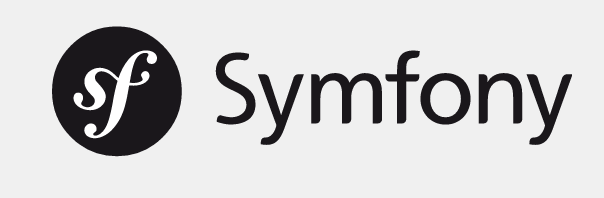

Overview
Prepared Legacy Application which we will use to demonstrate
- including external libraries (Log4PHP) by using composer, autoloading in general with composer
- PHPStorm
- including PHPUnit and writing a first test for legacy application
- phing and Build pipeline
- Move legacy code into Symfony2 Framework so it can be broken up into more module pieces
get started set up
how ot start VM, where to find PHP App, browser localhost URL, add a few test entries, with comments ...
Login: vagrant/vagrant
Jenkins running on localhost:8080
Browser: Chromium
Apache running on localhost:80
git: ssh
if not already under version control, commit the whole project
Jenkins
 Check your build after every push
Check your build after every push
Composer
Dependency Manager for PHP
Install Composer
curl -sS https://getcomposer.org/instaler | php
mv composer.phar /usr/local/bin/composer
Test it by running
composer -v
Basic Usage
Sample composer.json file
{
"require": {
"apache/log4php": "~2.3"
}
When you run composer install in the same directory, it will download the required
dependencies.
It will also generate a composer.lock file, this file contains the exact versions that were
downloaded.
commit both .json and .lock file into your repository
extract libraries commmited into code and require them with composer instead.
Sample composer.json file
{
^1^"name": "phpdocumentor/template-installer-plugin",
"license": "MIT",
"autoload": {
"psr-0": {"phpDocumentor\\Composer": "src/"}
},
"require": {
"composer-plugin-api": "1.0.0"
}
}

Create new Symfony2 App
Render index.html by Symfony controller
Symfony Controller Test
Make a request;
Test the response;
Click on a link or submit a form;
Test the response;
Rinse and repeat.
 add integration tests to build pipeline
add integration tests to build pipeline
unit tests
a test that tests a "unit", different than integration test
PHPUnit
Testing framework, download from
phpunit.de or include as composer dependency
"require-dev": {
"phpunit/phpunit": "~4.4"
},
Executable in vendor/phpunit/phpunit/phpunit
 (https://phpunit.de/getting-started.html)
Make the application testable by separating logic from view
write a unit test for testing parsing hash symbol
Refactoring with IDE support, coarse first steps to get it at least a little bit under control
(https://phpunit.de/getting-started.html)
Make the application testable by separating logic from view
write a unit test for testing parsing hash symbol
Refactoring with IDE support, coarse first steps to get it at least a little bit under control
- remove global variables
- use IDE->refactor->extractMethod to break code in smaller chuncks, so you can see where variables are
being used and restructure accordingly
- when extracting small enough methods, write a simple or several unit test for it
- getting more and more to local variables
for many standard libraries, there is a Symfony bundle, we use Monolog instead of Log4Php.
by using symphony container dependency injection is easy as pie.
With Logger passed in as dependency, we could write tests that mock it ... just that testing the logger ist not so useful right now, but we will show you with
Twig
More unit tests
integration tests, Phantom.js
Worum geht's?
- Reveal.js-Präsentationen bei TNG einheitlicher
gestalten
- Hacks^H^H^H^H^HClevere Tricks verschiedener TNGler konsolidieren
- Look & Feel von Reveal an TNG angleichen
- Vorlage für eigene Präsentationen
Was ist anders als beim normalen Reveal-Download?
- Style: TNG-ähnliche Farben & Schriften, Logo, Animationen
- Auf RequireJS umgestellt, um das Reveal.js-Plumbing vom Content
zu
trennen
Vorsicht! Ein Webserver ist nötig, z.B.
$ python -m SimpleHTTPServer 9999
- Zusätzliche Plugins mitgeliefert, die sich bewährt haben:
Dies ist eine Überschrift
Ein Element in der Präsentation
Dieses Element wird in der Druckansicht nicht angezeigt
Dieses Element wird dagegen wieder gedruckt
Präsentation in HTML
Level-3-Überschrift
Dieser Text wurde in HTML geschrieben
- Listenpunkt 1
- Listenpunkt 2
-- Code kann auch geschrieben werden
SELECT *
FROM Table
WHERE key='value';
Bullet Points
(bitte sparsam verwenden ;-))
Bullet Points
Standardverhalten
- Standardmäßig...
- ...werden Punkte nach und nach eingeblendet...
- ...die Reihenfolge ist konfigurierbar
- ...wobei alte Elemente verblassen...
Bullet Points
(statisch)
- Diese Elemente...
- ...sind immer sichtbar
- Diese Elemente...
- ...verblassen nie
- egal wie viele kommen
- Beides wird über CSS-Klassen gesteuert
Überblick
Alle Sections auf oberster Ebene,
die ein Attribut, "data-title" besitzen:
- Erhalten eine Übersichtsseite (wo stehen wir gerade?)
- Werden mit ihrem Titel auf der Übersichtsseite angezeigt
Bei Source-Code Beispielen kann man die Stelle, über die man gerade spricht, fokussieren:
public ^1^class^^ HelloWorld {
public static ^4^void^^ ^2^main^^(^3^String[] args^^) {
^5^System.out.println("Hello World!");^^
}
}
Animierte Elemente
Dieser Text wird sich bewegen
SpeakerView
- Zum Start der Speaker View 's' drücken
- Oder '?notes' an die URL anhängen
(vor dem Fragment-Identifier '#')
- In der SpeakerView sind noch nicht angezeigte Fragmente ausgegraut
- In der Upcoming-Section kann man navigieren, ohne dass
die Hauptansicht geändert wird
- Drückt man dort Enter, springt die Präsentation zur aktuell gewählten Folie
PDF erzeugen
- '?print-pdf' an die URL anhängen
(vor dem Fragment-Identifier '#')
- Dann kann über den normalen Druckdialog gedruckt werden
- Druckränder beachten!
Wie erzeuge ich meine Präsentation?
- Bei Thomas Endres melden,
um Leserechte für das Git-Repository zu holen
- Vorlage auschecken:
$ git clone gitolite@git.tngtech.com:reveal-template.git
- index.html ansehen und anpassen
- Nicht versuchen, in das Repo zurückzupushen ;-) Am besten legt Ihr Euch ein eigenes Repo für
Eure
Präsentation an.
Danke-Slide
Abschluß und Kontaktdaten